[N-World Contents] [Book Contents] [Prev] [Next] [Index]
N-Paint 3D: 3D Mode
Using 3D mode, you can paint directly on objects in the Geometry window.
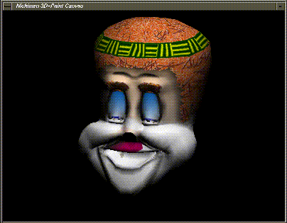
In this Chapter
You'll learn how to:
3D Mode
While map mode unfolds the geometry of a face, collection of faces, or an entire object and shows them as an overlay on a paint canvas, 3D mode lets you paint directly onto the surface of an object.
You paint on the object in a special window called the 3D Paint canvas; in this chapter we'll use a sample object and show how to paint on the different maps of the object.
Before You Begin
To paint on an object in 3D mode, you must triangulate it first. However, since you may not want to triangulate your original object, you have two options when using N-Paint 3D:
Method #1-Make a Copy of the Object
If you want to make sure that you don't accidentally save a triangulated version of your object:
Remember that you are actually painting on the maps, not the object itself.
Method #2-Triangulate the Object but Don't Save It
If you don't want to bother with saving an extra copy of the object:
When you read your original (untriangulated) version, the maps painted on the triangulated version should fit on the object just as they did on the triangulated version. Remember that you are actually painting on the maps, not the object itself.
Getting Started
For this tutorial, we're going to use a sample object (a clown's head) to show the 3D mode of N-Paint 3D. To prepare this object ahead of time, we did the following:
The object has no special characteristics that a typical object you might design yourself would not have.
To load in the prepared clown head:
1. (CLICK-L) on Open in the GeoMenus.
- In the dialog box that appears, load in the following object:
/usr/local/ngc/demo/objects/Clown_Group.geo
- Reading in objects is described in more detail in the N-Geometry Reference Guide.
2. (CLICK-L) on the Read in Object button.
- The clown appears in the Nichimen Geometry window:
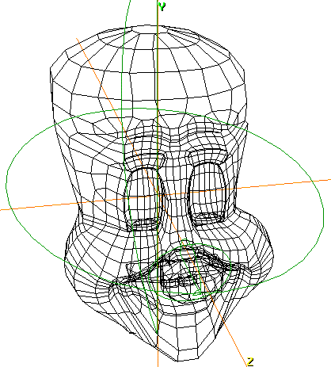
Figure 8.1 The prepared clown head
Triangulating the Object
Remember that we've already assigned the map and mappers to the non-triangulated version of the clown head; when we paint on the triangulated version, remember that we're actually updating the maps (which are used by both versions). This means that the next time you read in the non-triangulated version of the clown head, the maps will be applied automatically through the specified mappers.
1. (CLICK-L) on bodies in the element sensitivity menu in the Nichimen Geometry window.
2. (SHIFT-L) on the clown head.
3. (CLICK-L) on the Triangulate command.
- The triangulate command cuts faces into triangles, but is necessary in order to paint on the surface of the object. Your triangulated clown head should look something like this:
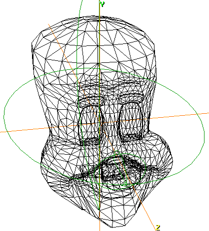
Figure 8.2 Triangulated clown head
- Note that the mappers are still in place. Also, if you examine the parts for the object, you'll see that the parts are preserved when a triangulation is performed.
- Note. Because triangulating the object creates more faces on the object, you may find it useful to use the Stand-Ins command from the GeoMenus to create a stand-in for the object while moving the camera.
Using Orthographic Mode
When using N-Paint 3D in 3D mode, you should display your model in orthographic mode. To enter orthographic mode in N-Geometry, press the "o" hot key.
You're now ready to begin painting on the surface of the object.
Painting on the Object
You paint on the object just as if it were a statue sitting on your workbench. You can reposition the camera (or the object) to any position you want, which is particularly useful if you're performing detail work on a discrete part of an object.
Moving the Camera
The object is copied to the Nichimen 3D-Paint Canvas using its position in the Nichimen Geometry window; position the object so that the part you want to paint on is visible.
1. (CLICK-M) on an open area of the Nichimen Geometry window.
- The camera is "engaged" and can be moved as described in the N-Geometry Reference Guide.
2. (CLICK-L) when you have the desired view of the object you want to paint on.
Painting on the Object
In 3D mode, the object is "copied" into a new window, the Nichimen 3D-Paint Canvas. The view of the object in this window is identical to the view you set up in the Nichimen Geometry window.
3. (CLICK-L) on Shading in the GeoMenus and choose the clown head group.
- Note. The shaded version of the object must be visible in the Nichimen Geometry window. If you select an unshaded object to send to the 3D Paint canvas, only the object will be invisible.
4. (CLICK-L) on bodies on the element sensitivity menu.
5. (CLICK-L) on the clown head.
6. (CLICK-L) on the 3D button in the 3D Paint section of the menu.
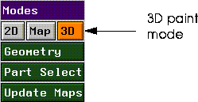
Figure 8.3 The 3D button
- The selected object is displayed in the 3D-Paint Canvas:
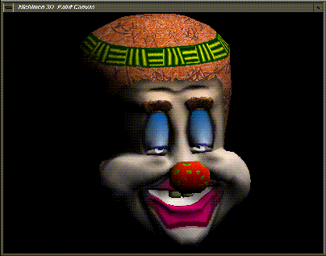
Figure 8.4 The Nichimen 3D Paint Canvas window
7. Choose a simple tool from the Nichimen Paint menu.
- Let's start with something simple like the round brush with a red color ink.
8. Draw several strokes across the clown's cheeks.
- Try something like this:
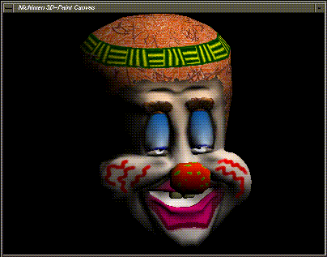
Figure 8.5 Painting on the clown
- Continue painting on the clown until you've finished the changes you want to make.
Saving Changes to the Maps in Memory
You need to save changes to the maps in memory before:
or
To update the maps in memory you use the Update Maps button:
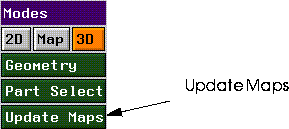
Figure 8.6 Update the maps (in memory) before changing the view
You can update all the maps associated with the object, or just those applied to selected parts, as described in the sections below.
Updating All Maps
If you've painted over a number of parts, and want to save all the maps that may have been affected:
1. (CLICK-L) on the Update Maps button.
- If you choose this option, all maps associated with the selected object are updated in memory.
- Note. You should update maps whenever you change modes (e.g., from 3D to map mode, or when you make the Geometry window active to change the views). (If you have only modified selected maps, see the section "Updating Selected Maps," on page 8-10.
- If you try to change modes without updating the maps, the following warning is displayed:
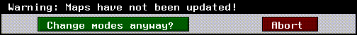
Figure 8.7 Save your changes before changing modes!
- If you choose to change modes without updating, any changes made to the maps (since the last time they were saved to memory) will be lost.
Updating Selected Maps
If you have only been working on a particular section of the object, and want to save only the maps that are associated with selected parts:
1. (CLICK-M) on the Update Maps button.
- A list of face parts that have been defined for the object appears:
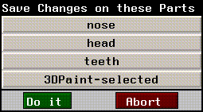
Figure 8.8 Selecting parts whose maps you want to save (to memory)
2. (CLICK-L) on the part (or parts) whose map(s) you want to save.
- If, for example, you were painting only on the clown's teeth, you would (CLICK-L) on the part "teeth."
- N-Paint 3D would check to see which maps were associated with the part teeth, and update that map in memory.
- Note. Only maps associated with the selected part(s) would be updated; once the mode change was completed, changes to other maps would be lost.
Reloading Maps
If you begin painting on an object but decide halfway through the session that you want to restart with the maps saved on disk:
1. (CLICK-L) on the File field in the Commands section of the Paint menu.
- The following menu appears:
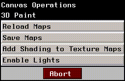
Figure 8.9 Reloading maps from disk
2. (CLICK-L) on Reload Maps.
- A list of maps currently in memory is displayed.
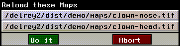
Figure 8.10 List of maps currently loaded into memory
3. (CLICK-L) on the maps you want to reload, then (CLICK-L) on Do it.
The selected maps are reloaded into memory and the object display is updated in the Nichimen 3D Paint Canvas window.
Saving Changes to Disk
Once you're happy with the changes you've made to the object's maps, you can save any or all loaded maps back to disk:
1. (CLICK-L) on the FIle field in the Commands section of the Paint menu.
- The following menu appears:
Figure 8.11 Saving maps from disk
2. (CLICK-L) on Save Maps
- A list of maps that have been modified is displayed:
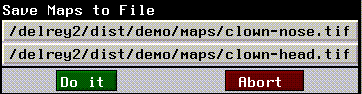
Figure 8.12 List of maps currently loaded into memory
3. (CLICK-L) on the maps you want to save to disk, then (CLICK-L) on Do it.
Working with Parts
You can work with parts of an object in 3D mode just as you can in Map mode.
Painting on Selected Faces
To paint on a group of faces not necessarily grouped into a part:
1. Collect the faces in the Nichimen Geometry window.
2. (CLICK-M) on the 3D button.
- The selected faces are assigned to the 3D-Paint selected part and the selected object is copied to the 3D Paint Canvas window. Suppose, for example, that we collect a group of faces between the clown's eyes:
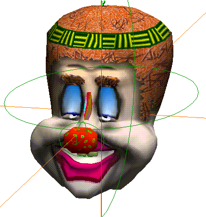
Figure 8.13 Selecting faces from which to create a matte
- The selected faces are copied into the matte channel.
3. (CLICK-L) on the View button under the Matte section of the Nichimen Paint menu to view the matte in the 3D Paint Canvas window.
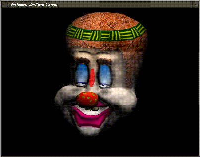
Figure 8.14 Selected faces are copied into the matte channel
4. The matte channel can be used to protect the selected faces.
- (CLICK-L) on the Use button in the Matte section to use the matte as it exists; (CLICK-L) on the Rev button if you want to reverse the matte (change which faces are protected and vice-versa).
The selected faces are copied into the 3D-Paint selected part whenever you (CLICK-L) on the 3D button, so they can be easily reselected from N-Paint 3D.
Toggling Visibility of Face Parts
If you want to make only selected parts of the model visible:
1. (CLICK-M) on the Part Select button.
- A list of parts on the selected object is displayed:
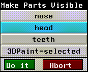
Figure 8.15 Parts associated with the object
2. (CLICK-L) on the parts you want to be visible in the Nichimen 3D Paint Canvas window.
- In this case, we chose only the head, so that the teeth and the nose are hidden from view:
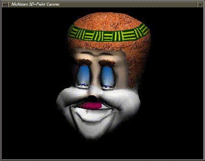
Figure 8.16 Only the selected parts are displayed
- Now, when you paint, only the visible parts are updated.
- This option is handy for painting on parts of an object that are obscured by other parts; for example, if you want to paint around the upper lip (which is normally obscured by the nose), you can make the nose invisible and paint directly onto the head part of the clown.
Making the Entire Object Visible
To make the entire object visible, (CLICK-R) on the Part Select button.
Partially Obscured Faces
By default, for 3D paint to paint onto a face, the face must be completely visible; that is, it cannot be even partially obscured by another part of the model.
If you want to save changes you have made to a partially obscured face, you must (SHIFT-L) or (SHIFT-M) on the Update Maps button.
Add Shading to Texture Maps
If you like the appearance of the object based on the current lighting of the N-Geometry scene, you can "pre-shade" the texture map.
- Note. This operation pre-shades only the visible portions of any texture maps.
To shade a texture map in 3D mode:
1. (CLICK-L) on the File field in the Commands section of the Commands menu.
2. (CLICK-L) on Add Shading to Texture Maps as shown below.
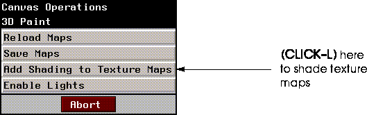
Figure 8.17 Shading texture maps
When you add shading to the texture maps, the object displayed on the 3D canvas gets darker, because you are darkening the maps, then displaying the object using those (now darker) maps.
If you want to view an object using pre-shaded maps without any additional shading effect from lights in N-Geometry, you can use the Disable Lights command described in the next paragraph.
Enable/Disable Lights
When painting on an object in 3D mode, you have the option of turning the lights in the scene on or off.
- Note. Enable/Disable Lights is strictly a display feature. Maps are affected in the same way, regardless of how this parameter is set.
To toggle lights on and off in 3D mode:
1. (CLICK-L) on the File field in the Commands section of the Commands menu.
2. (CLICK-L) on Enable/Disable Lights as shown below.
- The label on this button toggles based on its current state:
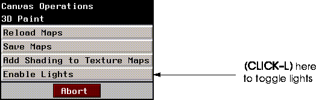
Figure 8.18 Toggling lights
[N-World Contents] [Book Contents] [Prev] [Next] [Index]
 Another fine product from Nichimen documentation!
Another fine product from Nichimen documentation!
Copyright © 1996, Nichimen Graphics Corporation. All rights
reserved.